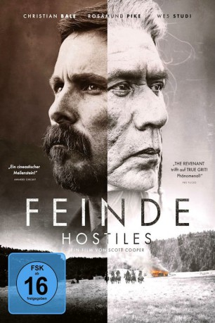
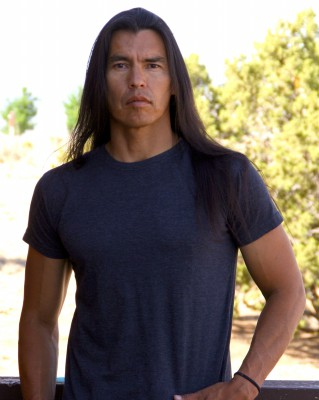
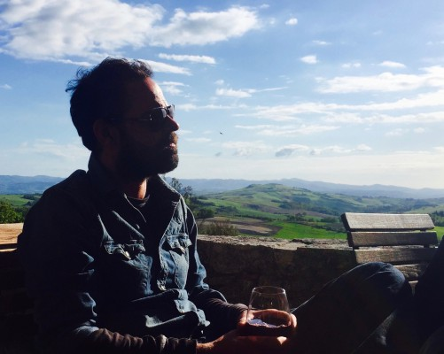
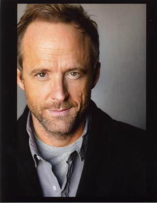
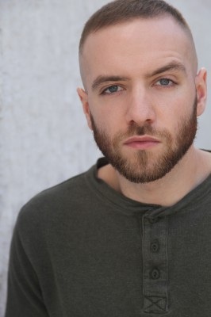
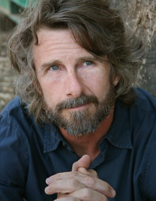
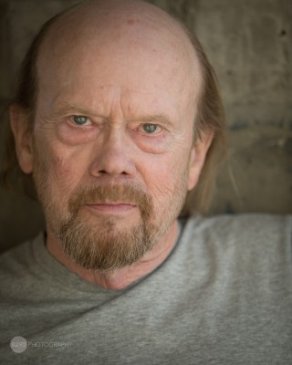

#8943 Feinde - Hostiles
Alternativ: Hostiles
 
 IMDB-Wertung: 7.2 / 10
IMDB-Wertung: 7.2 / 10  Metascore: 65
Metascore: 65 
New Mexico, 1892: Der verdiente Offizier Joseph Blocker erhält den Auftrag, den kranken Cheyenne-Häuptling Yellow Hawk der die vergangenen sieben Jahre im Gefängnis verbrachte, in dessen Stammesland nach Montana zu begleiten. Der letzte Wunsch des als unerbittlich bekannten Indianers ist es, zu Hause zu sterben. Blocker und Yellow Hawk haben eine gemeinsame Vergangenheit, weswegen Blocker den Auftrag nur äußerst widerwillig annimmt. Gemeinsam mit einigen Soldaten und der Familie des Häuptlings bricht die Truppe auf. Unterwegs stoßen sie auf die junge Witwe Rosalie Quaid, deren gesamte Familie kaltblütig von Komantschen umgebracht wurde. Die traumatisierte Frau schließt sich ihnen an und die Gruppe setzt ihren gefährlichen Weg quer durch das unwegsame Land und eine extrem feindselige Umgebung fort. Schon bald wird klar, dass sie nur als Gemeinschaft im Kampf ums Überleben eine Chance haben…
Jahr: 2017
Dauer: 133 Minuten
FSK: 16
Land: USA Studio: Entertainment Studios Motion PicturesTonspuren: DTS - ,
Untertitel: Deutsch,
Auflösung: 1080p (1920x808) Größe: 6246 MB
Genre: Action, Drama, Abenteuer, Western
Regisseur: Scott Cooper
Drehbuch: Scott Cooper, Donald E. Stewart
Soundtrack: Max Richter
Darsteller:
 Scott Shepherd als Wesley Quaid
Scott Shepherd als Wesley Quaid Rosamund Pike als Rosalee Quaid
Rosamund Pike als Rosalee Quaid-  David Midthunder als Buffalo Man
 Christian Bale als Capt. Joseph J. Blocker
Christian Bale als Capt. Joseph J. Blocker-  Rory Cochrane als Master Sgt. Thomas Metz
- Jonathan Majors als Corp. Henry Woodson
-  John Benjamin Hickey als Capt. Royce Tolan
 Stafford Douglas als Corp. Molinor
Stafford Douglas als Corp. Molinor Stephen Lang als Col. Abraham Biggs
Stephen Lang als Col. Abraham Biggs Bill Camp als Jeremiah Wilks
Bill Camp als Jeremiah Wilks Wes Studi als Chief Yellow Hawk
Wes Studi als Chief Yellow Hawk Jesse Plemons als Lt. Rudy Kidder
Jesse Plemons als Lt. Rudy Kidder Timothée Chalamet als Pvt. Philippe DeJardin
Timothée Chalamet als Pvt. Philippe DeJardin Adam Beach als Black Hawk
Adam Beach als Black Hawk- Xavier Horsechief als Little Bear
 Q'orianka Kilcher als Elk Woman
Q'orianka Kilcher als Elk Woman- Tanaya Beatty als Living Woman
 Peter Mullan als Lt. Col. Ross McCowan
Peter Mullan als Lt. Col. Ross McCowan- Austin Rising als Fort Winslow Lance Corporal
- Robyn Malcolm als Minnie McCowan
- Ryan Bingham als Sgt. Paul Malloy
 Paul Anderson als Corp. Tommy Thomas
Paul Anderson als Corp. Tommy Thomas Ben Foster als Philip Wills
Ben Foster als Philip Wills-  Dicky Eklund Jr. als Hatchet Face (Buffalo Hunter)
 Scott Wilson als Cyrus Lounde
Scott Wilson als Cyrus Lounde-  Brian Duffy als Silas Lounde
- Richard Bucher als Ezekiel Lounde
 Luce Rains als Virgil Lounde
Luce Rains als Virgil Lounde- James Cady als Train Conductor
- Justin Arnsworth als Calvary Private (uncredited)
- Suzanne Roxanne Fortner als Settler Woman (uncredited)
-  Christopher Hagen als Sutler (uncredited)
- Sharon Anne Henderson als Apache Woman (uncredited)
- Jack Jackson als Calvary Private (uncredited)
- Gentry Lee als Cavalry (uncredited)
- Diana Navarrete als Maria (uncredited)
- Christian Pedersen als Cavalry Sergeant (uncredited)
- Gonzalo Robles als Cavalry (uncredited)
- Ava Cooper als Lucy Quaid
- Stella Cooper als Sylvie Quaid
- Gray Wolf Herrera als Apache Man
- Scott Anderson als Muny (Buffalo Hunter)
- Boots Southerland als Outlaw (Buffalo Hunter)
- Charles Ash als Sutler's Assistant (uncredited)
- Makayah Crowfoot als Apache Girl (uncredited)
- Cassandra Rochelle Fetters als Townswoman (uncredited)
- John Gibbs als Indian Prisoner (uncredited)
- Kenny Harragarra als Ft. Berringer Prisoner (uncredited)
- Derek Lacasa als Trooper #2 (uncredited)
- David Loving als Man with a Cane (uncredited)
Datei: X:\HD-Western-2000-2015\Feinde - Hostiles (2017, FSK16, 1920x808).mkv seit 16.05.2018
Festplatte: HD Eastern+Western
 Es gibt insgesamt 61 Filme in der Gruppe 'HD-Western-2000-2015'
Es gibt insgesamt 61 Filme in der Gruppe 'HD-Western-2000-2015'